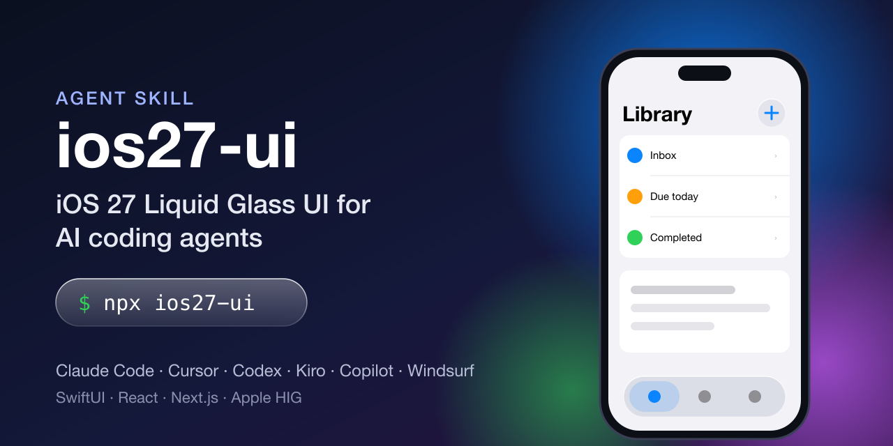

Open-source agent skill
iOS 27 Liquid Glass UI for AI coding agents
ios27-ui teaches Claude Code, Cursor, Codex, Kiro and Copilot to design, audit and build screens that feel like Apple shipped them, following the Human Interface Guidelines, in SwiftUI, React and Next.js.

Install
npx ios27-uinpx skills add imtiyazakiwat/ios27-ui-skill/plugin marketplace add imtiyazakiwat/ios27-ui-skillWhat your agent will do
Audit before redesigningEvery element gets keep, move, merge or remove, with a reason. Duplicate actions and fake buttons go.
Fix the information architectureTabs only navigate. One primary action per screen. Detail is a push, edit is a sheet, delete needs confirmation or Undo.
Build from tokens uptokens.css and spring presets, then kit components, then screens. Light and dark from the start.
Native motionPush with parallax, edge-swipe back, receding sheets, large-title collapse, all interruptible and reduced-motion aware.
Verify like a skepticScreenshots in light and dark on an iPhone profile, real-data edge cases, and an honest report of what wasn't verified.
Works with
Claude Code, Kiro, CodexFull skill in .claude/skills, .kiro/skills, .agents/skills
Cursor, Windsurf, GitHub CopilotSummary rules that point to the full skill
SwiftUI, UIKit, React, Next.js, CSSFramework-neutral spec with web and native implementation guides
FAQ
Is this made by Apple?
No. It's an independent open-source project based on Apple's public Human Interface Guidelines and WWDC sessions. Exact glass values aren't published by Apple, so they're approximations.
Does it make a web app "native"?
It makes a web app follow the same patterns and behaviour as iOS. For true native apps it tells the agent to use SwiftUI and UIKit system components instead of re-skinning them.
How do I contribute?
Corrections backed by an Apple source are the most valuable. See CONTRIBUTING.md and the good first issues.